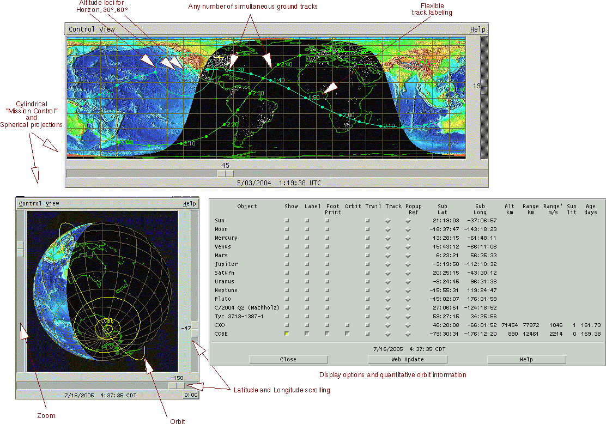

Plot ground tracks and orbits for any number of Earth satellites simultaneously in either "Mission Control" or spherical format. Sunlit side shows colored relief profile, night side shows light sources viewed from space. Get up-to-date TLE parameter sets with one click from celestrak.com or other web sites. 